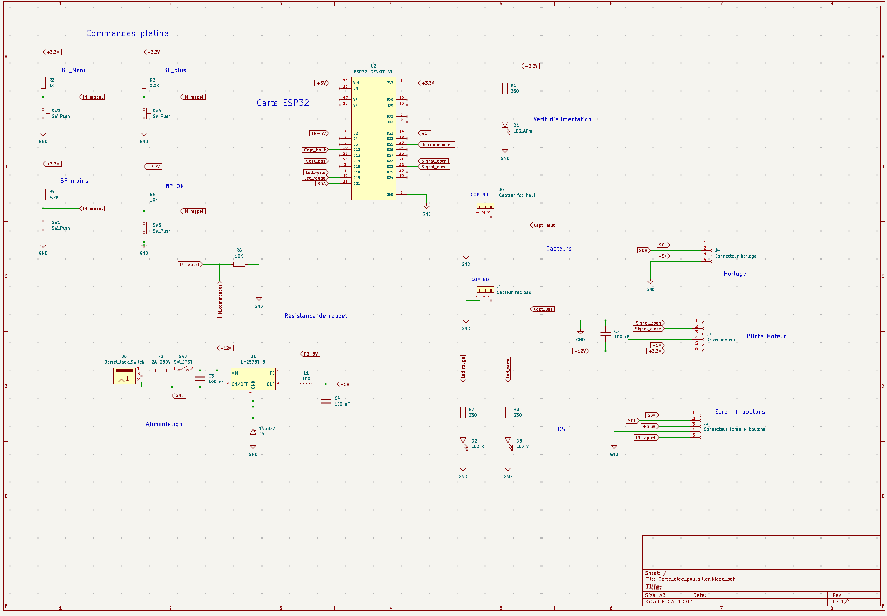
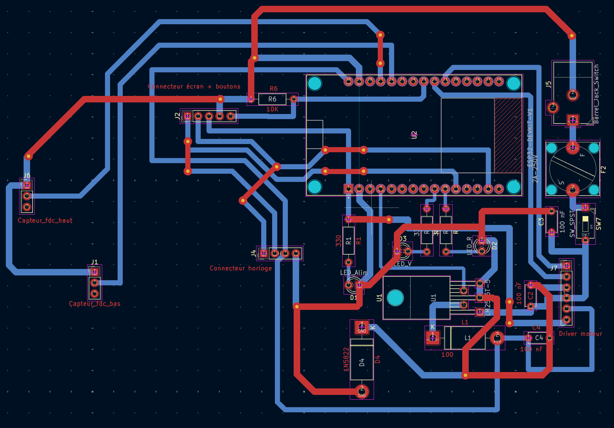
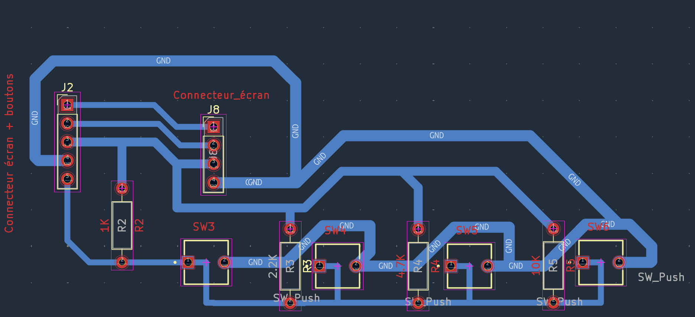

Présentation
Cette année, mon grand-père a rencontré des difficultés avec ses poules qui ont subi plusieurs attaques durant la nuit. J'ai donc eu pour idée de l'aider en concevant d'A à Z une porte de poulailler automatique.
Mise en place
Conception de la carte électronique
Une fois que j'ai eu une idée assez claire sur la manière dont j'allais réaliser mon projet
et avec quoi, j'ai pu commencer à travailler sur la conception de la carte électronique.
Pour cette partie, j'ai utilisé "KiCad", un logiciel
de conception de circuits imprimés sur lequel j'ai pu dans un premier temps réaliser
le schéma électronique, pour ensuite passer au routage.

Maintenant que j'avais rassemblé tous les composants et créé tous les systèmes logiques électroniques sur ma carte, je pouvais concevoir ce que l'on appelle le routage. Il représente contrairement au schéma le véritable visuel de ma future carte avec toutes les contraintes physiques d'encombrement. C'est donc à ce moment que j'ai dû réfléchir à l'emplacement de chaque composant. Je pense notamment aux condensateurs que j'ai placés au plus proche de mes sources d'alimentation, cela permet de réduire plus efficacement les perturbations ou encore le connecteur jack que j'ai placé dans un angle de la carte qui serait facilement accessible pour brancher le câble d'alimentation de la carte.


Pour la suite, j'ai pu compter sur l'aide d'Éric (technicien de l'IUT), c'est à lui que j'ai envoyé mes fichiers de conception et qui de son côté a imprimé les deux PCB sur carte. Il a également effectué tous les perçages. Je n'avais plus qu'à réaliser toutes les soudures.

Conclusion
Pour conclure, je dirais que ce projet m'a beaucoup plu de par la grande diversité de questions abordées. Cela m'a pris au final plusieurs mois pour arriver à un système fonctionnel.